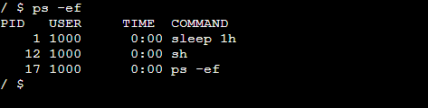
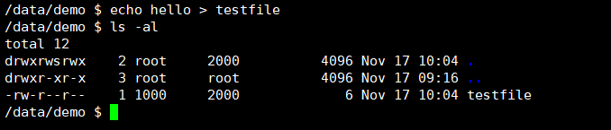
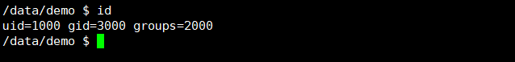
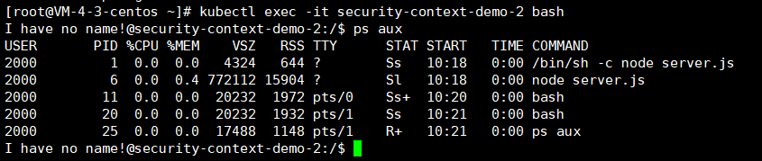

securityContext是什么呢，有什么作用呢，其实这个就是用来控制容器内的用户权限，你想用什么用户去执行程序或者执行操作等等。
securityContext介绍
安全上下文（Security Context）定义 Pod 或 Container 的特权与访问控制设置。 安全上下文包括但不限于：
- 自主访问控制（Discretionary Access Control）：基于 用户 ID（UID）和组 ID（GID）. 来判定对对象（例如文件）的访问权限。
- 安全性增强的 Linux（SELinux）： 为对象赋予安全性标签。
- 以特权模式或者非特权模式运行。
- Linux 权能: 为进程赋予 root 用户的部分特权而非全部特权。
- AppArmor：使用程序框架来限制个别程序的权能。
- Seccomp：过滤进程的系统调用。
- AllowPrivilegeEscalation：控制进程是否可以获得超出其父进程的特权。 此布尔值直接控制是否为容器进程设置 no_new_privs标志。 当容器以特权模式运行或者具有 CAP_SYS_ADMIN 权能时，AllowPrivilegeEscalation 总是为 true。
- readOnlyRootFilesystem：以只读方式加载容器的根文件系统。
如何为 Pod 设置安全性上下文
要为 Pod 设置安全性设置，可在 Pod 规约中包含 securityContext 字段。securityContext 字段值是一个 PodSecurityContext 对象。你为 Pod 所设置的安全性配置会应用到 Pod 中所有 Container 上。 下面是一个 Pod 的配置文件，该 Pod 定义了 securityContext 和一个 emptyDir 卷
1 | apiVersion: v1 |
下面我们来解析下securityContext中每个配置的含义然后到容器内进行验证下是否有生效：
- runAsUser: 1000字段指定 Pod 中的所有容器内的进程都使用用户 ID 1000 来运行。
进到容器中，我们发现执行任何命名也就是进程的用户都是1000

- runAsGroup: 3000字段指定所有容器中的进程都以主组 ID 3000 来运行。 如果忽略此字段，则容器的主组 ID 将是 root（0）。 当runAsGroup被设置时，所有创建的文件也会划归用户 1000 和组 3000。

- fsGroup: 2000被设置，容器中所有进程也会是附组 ID 2000 的一部分。 卷/data/demo及在该卷中创建的任何文件的属主都会是组 ID 2000。

为 Container 设置安全性上下文
我们可以在pod层面和container层面设置上下文，但是如果2个同时配置了，那么哪个会生效呢？下面我们来测试一下
1 | [root@VM-4-3-centos ~]# cat security-context-2.yaml |

从上图的结果发现，进程的用户都是2000，这里说明container的级别要高于pod的级别，也就是container会覆盖pod中的securityContext配置。
pod的特权模式运行
Privileged-决定是否 Pod 中的某容器可以启用特权模式。 默认情况下，容器是不可以访问宿主上的任何设备的，不过一个“privileged（特权的）” 容器则被授权访问宿主上所有设备。 这种容器几乎享有宿主上运行的进程的所有访问权限。 对于需要使用 Linux 权能字（如操控网络堆栈和访问设备）的容器而言是有用的
1 | image: busybox:latest |
在上下文配置上这个字段，后续pod就可以获取宿主机的访问权限了。
参考文档
https://kubernetes.io/zh/docs/tasks/configure-pod-container/security-context/

欢迎访问 Vashon 的博客，博客和文章在完善中，请大家耐心等待。 若有问题或者有好的建议欢迎留言，笔者看到之后会及时回复。

...
...